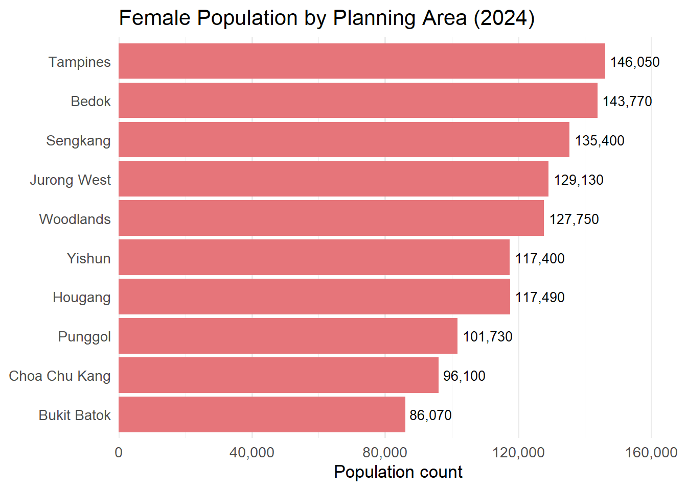
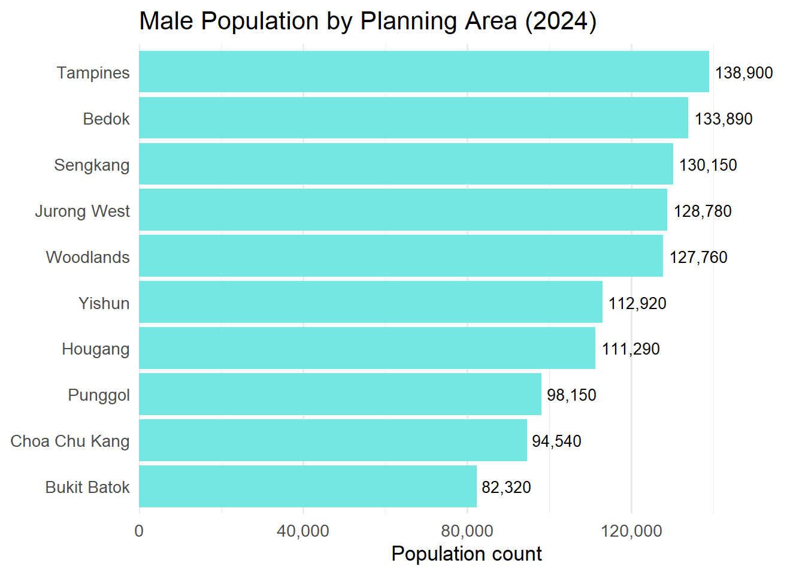

pacman::p_load(tidyverse,dplyr,
ggplot2, forcats,
scales,patchwork)Take-home Exercise 01
Overview
Setting the scene
A local online media company that publishes daily content on digital platforms is planning to release an article on demographic structures and distribution of Singapore in 2024.
About Data
I will use the data for this task from the Singapore Residents by Planning Area/Subzone, Single Year of Age and Sex, June 2024’ dataset, published by the Department of Statistics, Singapore (DOS)

My Task
As the graphical editor of the media company, my task is to design and prepare up to three data visualisations to support an upcoming article on Singapore’s demographic structure and distribution in 2024.
Getting started
Load packages
Firstly, write below code chunk to install and check the R packages installed.
tidyverse— Core data wrangling & plotting (readr,dplyr,ggplot2, etc.)dplyr— A grammar of data manipulation: filter, arrange, summarise, and transform data efficiently using intuitive syntax.ggplot2— A powerful and extensible system for creating elegant, layered data visualisations using the Grammar of Graphics.forcats— Tools for working with categorical variables and factor reordering.scales— Format axis labels (e.g. comma(), percent()) for ggplot2.patchwork— Seamlessly combines multipleggplot2plots into custom layouts for comparison or storytelling.
Import data
population_age_sex_2024 <- read_csv("respopagesex2024/respopagesex2024.csv")Review the dataframe’s structure
glimpse(population_age_sex_2024)Rows: 60,424
Columns: 6
$ PA <chr> "Ang Mo Kio", "Ang Mo Kio", "Ang Mo Kio", "Ang Mo Kio", "Ang Mo K…
$ SZ <chr> "Ang Mo Kio Town Centre", "Ang Mo Kio Town Centre", "Ang Mo Kio T…
$ Age <chr> "0", "0", "1", "1", "2", "2", "3", "3", "4", "4", "5", "5", "6", …
$ Sex <chr> "Males", "Females", "Males", "Females", "Males", "Females", "Male…
$ Pop <dbl> 10, 10, 10, 10, 10, 10, 10, 10, 30, 10, 20, 10, 20, 30, 30, 10, 3…
$ Time <dbl> 2024, 2024, 2024, 2024, 2024, 2024, 2024, 2024, 2024, 2024, 2024,…Checking duplicate
population_age_sex_2024[duplicated(population_age_sex_2024),]# A tibble: 0 × 6
# ℹ 6 variables: PA <chr>, SZ <chr>, Age <chr>, Sex <chr>, Pop <dbl>,
# Time <dbl>Filtering data for selected variables
| Variable Abbreviation | Variable Term | Variable Descrption |
|---|---|---|
| PA | Planning Area | These are the main geographical divisions used for planning and census purposes in Singapore. They are delineated by the Urban Redevelopment Authority (URA). |
| SZ | Subzone | Each planning area is further divided into subzones, which are smaller areas typically focused around a specific activity or neighborhood center. For example, within the Singapore River planning area, subzones include Boat Quay, Clarke Quay, and Robertson Quay. |
| Age | Age in years | The age of individuals, measured in completed years. |
| Sex | Gender | Biological sex classification of the population group, recorded as “Males” or “Females.” |
| Pop | Population count | The total number of individuals in each age–sex group (or area) for the given year. |
| Time | Year | The calendar year to which the population data refers (e.g. 2024). |
EDA 1: What is Singapore’s overall age-sex profile in 2024?
library(dplyr)
library(ggplot2)
library(forcats)
library(scales)
pop_pyramid <- population_age_sex_2024 %>%
mutate(
Age_num = case_when(
Age == "90_and_Over" ~ 85,
TRUE ~ as.numeric(Age)
)
) %>%
filter(Time == 2024, !is.na(Age_num)) %>%
mutate(
AgeGroup = cut(
Age_num,
breaks = c(seq(0, 85, by = 5), Inf),
right = FALSE,
labels = c(paste(seq(0, 80, by = 5), seq(4, 84, by = 5), sep = "-"), "85+")
)
) %>%
group_by(AgeGroup, Sex) %>%
summarise(count = sum(Pop), .groups = "drop") %>%
mutate(
count = ifelse(Sex == "Males", -count, count),
AgeGroup = fct_rev(AgeGroup),
label = comma(abs(count))
)
ggplot(pop_pyramid, aes(x = count, y = AgeGroup, fill = Sex)) +
geom_col(width = 0.8, colour = "white", alpha = 0.85) +
geom_text(aes(label = label),
hjust = ifelse(pop_pyramid$Sex == "Males", 1.05, -0.15),
size = 3.0, color = "#333333") +
scale_x_continuous(
breaks = pretty_breaks(n = 6),
labels = function(x) comma(abs(x)),
expand = expansion(mult = c(0.25, 0.25))
) +
scale_fill_manual(values = c("Males" = "#75E6E1", "Females" = "#E6757A")) +
labs(
title = "Singapore's Age and Gender Distribution (2024)",
x = "Population count",
y = "Age group",
fill = NULL
) +
theme_minimal(base_size = 13) +
theme(
panel.grid.major.y = element_blank(),
panel.grid.major.x = element_line(colour = "#ECECEC"),
axis.text.x = element_text(margin = margin(t = 5)),
legend.position = "bottom",
plot.title = element_text(face = "bold", hjust = 0.5)
)Insights
- Singapore’s age distribution shows a prominent bulge in the 30–44 age range, highlighting a strong mid-career workforce in Singapore.
- Younger age groups (0–19) appear noticeably narrower, suggesting a decline in birth rates in recent years.
- The sex ratio is balanced in younger cohorts, shifts slightly towards females in middle age (35–59), and shows a female majority in the 85+ group.
Policy implications
Workforce planning should prioritize support for the dominant mid-career population to sustain productivity.
A smaller youth base could lead to future labor shortages, highlighting the need for long-term talent development and family-friendly policies.
EDA 2: Which Planning Areas(PA) are the most populous, and how is that population split by gender?
pa_gender <- population_age_sex_2024 %>%
filter(Time == 2024) %>%
group_by(PA, Sex) %>%
summarise(Pop = sum(Pop), .groups = "drop")
top_pas <- pa_gender %>%
group_by(PA) %>%
summarise(Total = sum(Pop), .groups = "drop") %>%
arrange(desc(Total)) %>%
slice_head(n = 10) %>%
pull(PA)
plot_data <- pa_gender %>%
filter(PA %in% top_pas) %>%
mutate(PA = fct_reorder(PA, Pop, .fun = sum))
p_overall <- plot_data %>%
group_by(PA) %>%
summarise(Total = sum(Pop), .groups = "drop") %>%
mutate(PA = fct_reorder(PA, Total)) %>%
ggplot(aes(x = Total, y = PA)) +
geom_col(fill = "gray60") +
geom_text(aes(label = comma(Total)),
hjust = -0.1,
size = 3.8,
color = "black") +
scale_x_continuous(labels = comma,
expand = expansion(mult = c(0, 0.15))) +
labs(
title = "Top 10 Planning Areas by Population (2024)",
x = "Population count",
y = NULL
) +
theme_minimal(base_size = 13) +
theme(panel.grid.major.y = element_blank())
print(p_overall)plot_data %>%
filter(Sex == "Females") %>%
ggplot(aes(x = Pop, y = PA)) +
geom_col(fill = "#E6757A") +
geom_text(aes(label = comma(Pop)),
hjust = -0.1,
size = 3.5,
color = "black") +
scale_x_continuous(labels = comma,
expand = expansion(mult = c(0, 0.15))) +
labs(
title = "Female Population by Planning Area (2024)",
x = "Population count",
y = NULL
) +
theme_minimal(base_size = 13) +
theme(panel.grid.major.y = element_blank())
plot_data %>%
filter(Sex == "Males") %>%
ggplot(aes(x = Pop, y = PA)) +
geom_col(fill = "#75E6E1") +
geom_text(aes(label = comma(Pop)),
hjust = -0.1,
size = 3.5,
color = "black")+
scale_x_continuous(labels = comma,
expand = expansion(mult = c(0, 0.15))) +
labs(
title = "Male Population by Planning Area (2024)",
x = "Population count",
y = NULL
) +
theme_minimal(base_size = 13) +
theme(panel.grid.major.y = element_blank())
Insights
- Tampines and Bedok are the most populous planning areas in 2024, each with nearly 280,000 residents, followed by Jurong West and Woodlands (~260,000–270,000).
- Across all top ten areas, female population slightly exceed male population, with the largest gender gap in Tampines (~10,000 more females).
- Younger towns like Punggol and Sengkang have narrower gender differences (~5,000–7,000), suggesting a more balanced household composition.
- Mature estates such as Tampines, Bedok, and Jurong West have both high population density and a modest female majority. This pattern may reflect long-term residential settlement trends, aging populations, or higher female longevity in mature estates.
Policy Implications
- Urban and social infrastructure planning should consider the female-majority population in Singapore’s most densely populated planning areas. This may signal the need for expanded services in healthcare, eldercare, childcare, and community safety, particularly in mature estates where female residents may be older or more likely to reside long-term.
EDA 3: Comparing Top 8 Subzones(SZ) by Youth(21–35) vs. Elderly(65+) Populations
Glossary：
Elderly :“Elderly people” in Singapore are defined as individuals aged 65 years and above. This classification aligns with the Ministry of Health (MOH) and the Department of Statistics Singapore (DOS) standards. The age of 65 is significant as it corresponds with the official retirement age and is used in formulating public policies, healthcare planning, and social support programs aimed at the senior population.
Youth :“Young people” or “youth” are officially defined as individuals aged 15 to 35 years. This age range is established by the Ministry of Culture, Community and Youth (MCCY) to encompass the transitional phase from adolescence to adulthood, including secondary school students to young adults entering the workforce.
youth_top5 <- population_age_sex_2024 %>%
mutate(AgeNum = as.numeric(Age)) %>%
filter(Time == 2024, AgeNum >= 15, AgeNum <= 35) %>%
group_by(SZ) %>%
summarise(Pop = sum(Pop), .groups = "drop") %>%
slice_max(Pop, n = 8) %>%
mutate(SZ = fct_reorder(SZ, Pop))
elderly_top5 <- population_age_sex_2024 %>%
mutate(AgeNum = as.numeric(Age)) %>%
filter(Time == 2024, AgeNum >= 65) %>%
group_by(SZ) %>%
summarise(Pop = sum(Pop), .groups = "drop") %>%
slice_max(Pop, n = 8) %>%
mutate(SZ = fct_reorder(SZ, Pop))
# Plot : Youth
p1 <- ggplot(youth_top5, aes(x = SZ, y = Pop)) +
geom_col(fill = "#66B2FF", width = 0.7) +
geom_text(aes(label = comma(Pop)), hjust = -0.1, size = 3.5, color = "black") +
coord_flip() +
scale_y_continuous(labels = comma, expand = expansion(mult = c(0, 0.3))) +
labs(title = "Top 8 Subzones: Youth (Age 21–35)", x = NULL, y = "Population") +
theme_minimal(base_size = 10) +
theme(
panel.grid.major.y = element_blank(),
plot.title = element_text(face = "bold")
)
# Plot : Elderly
p2 <- ggplot(elderly_top5, aes(x = SZ, y = Pop)) +
geom_col(fill = "#1E78B4", width = 0.7) +
geom_text(aes(label = comma(Pop)), hjust = -0.1, size = 3.5, color = "black") +
coord_flip() +
scale_y_continuous(labels = comma, expand = expansion(mult = c(0, 0.3))) +
labs(title = "Top 8 Subzones: Elderly (Age 65+)", x = NULL, y = "Population") +
theme_minimal(base_size = 10) +
theme(
panel.grid.major.y = element_blank(),
plot.title = element_text(face = "bold")
)
p1 + p2 +
plot_layout(ncol = 1) +
plot_annotation(
title = "Comparison of Top 8 Subzones: Youth vs. Elderly (2024)",
theme = theme(plot.title = element_text(face = "bold", size = 15, hjust = 0.5))
)Insights
- Tampines East appears prominently in both the youth (21–35) and elderly (65+) groups, indicating a multi-generational community with diverse service needs.
- Tampines West also ranks in the top 8 for both age groups, suggesting it is a mature subzone with a stable resident base across life stages.
- Woodlands East and Yishun East are key hubs for younger adults, likely due to affordable housing.
- Bedok North and Bedok South stand out for their large elderly populations, consistent with Bedok’s status as an older, well-established residential area.
- Yunnan appears in both groups, suggesting it may be transitioning demographically or has a balanced resident profile。
Political Implications
- These spatial patterns pinpoint where to prioritize youth services (childcare, schools) versus elder care resources (healthcare, senior centers).
Summary & Conclusion
This analysis examined the distribution of youth (ages 21–35) and elderly (65+) populations across Singapore’s subzones in 2024. The findings highlight distinct demographic patterns that have implications for urban planning and community services.
Key Observations:
Tampines East emerges as a significant multi-generational hub, with the highest numbers in both youth and elderly populations. This suggests a need for diverse amenities catering to a broad age range.
Tampines West also features prominently in both age groups, indicating its role as a stable residential area with a balanced demographic.
Woodlands East and Yishun East have substantial youth populations, possibly due to affordable housing options and proximity to educational institutions.
Bedok North and Bedok South show a higher concentration of elderly residents, reflecting the area’s status as a mature estate with long-term inhabitants.
Yunnan presents a balanced demographic profile, appearing in the top rankings for both youth and elderly populations, which may indicate a transitional community or diverse housing developments.
Implications:
Understanding these demographic distributions is crucial for policymakers and urban planners. Areas with significant elderly populations may require enhanced healthcare services and age-friendly infrastructure, while regions with a higher youth concentration might benefit from employment opportunities and recreational facilities. Recognizing multi-generational communities like Tampines East can inform the development of inclusive programs that address the needs of all age groups.
Recommendations for Future Research
Longitudinal Demographic Shifts: Future studies could track changes in subzone age distributions over multiple census years to identify aging or rejuvenating neighbourhoods and forecast service needs.
Migration and Mobility Patterns: Investigate how internal migration (e.g., young families moving into Yishun or Woodlands) or aging-in-place trends (as seen in Bedok) influence the demographic composition.
Facility and Service Availability: Analyze how the presence of amenities (e.g., eldercare, childcare, transport access) correlates with population age groups across subzones to inform infrastructure planning.
Housing Typologies and Affordability: Study how different housing types (BTOs, resale flats, rental units) affect youth versus elderly distributions, especially in transitional areas like Yunnan.
Social Integration in Multi-Generational Zones: Explore how intergenerational communities (e.g., Tampines East) navigate social cohesion, shared space usage, and policy responsiveness.